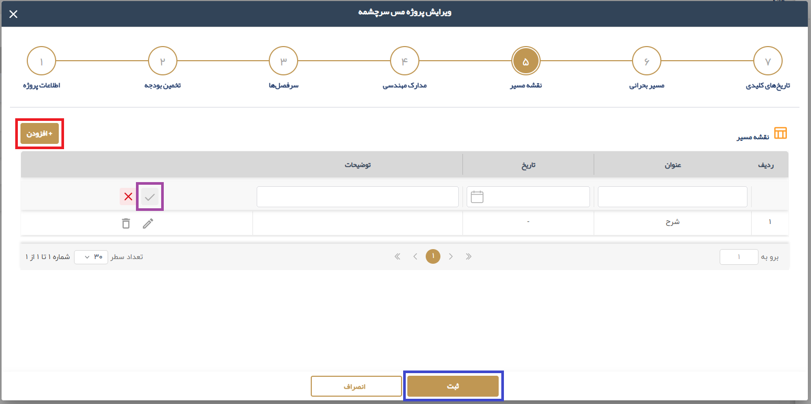

1.1.1.6. نقشه مسیر
نقشه مسیر های پروژه در این بخش با استفاده از کلید افزودن تعریف می شوند. هر یک از نقشه مسیرهای جدید با کلیک روی کلید تایید ثبت میشود. پس از وارد کردن تمامی نقشه مسیر ها، با کلیک روی کلید ثبت، اطلاعات ذخیره میگردد.

1.1.1.6. نقشه مسیرنقشه مسیر های پروژه در این بخش با استفاده از کلید افزودن تعریف می شوند. هر یک از نقشه مسیرهای جدید با کلیک روی کلید تایید ثبت میشود. پس از وارد کردن تمامی نقشه مسیر ها، با کلیک روی کلید ثبت، اطلاعات ذخیره میگردد.
 |